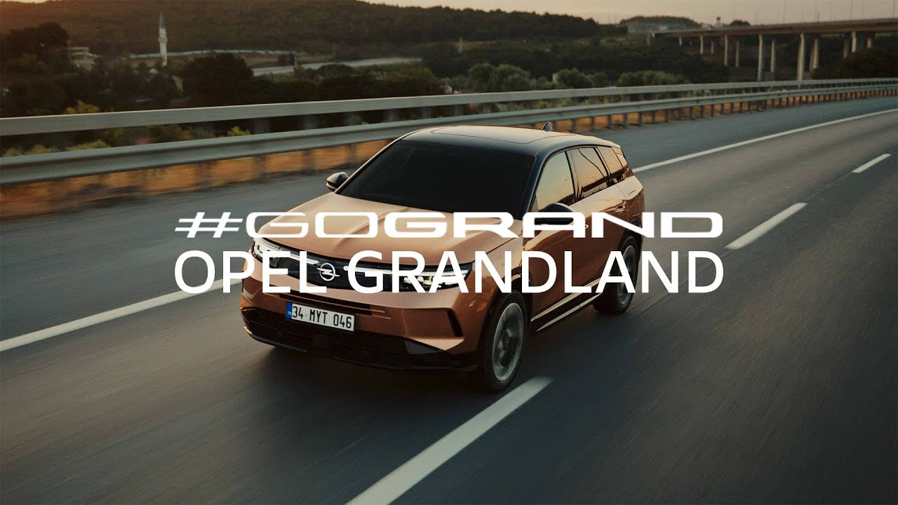

OPEL Grandland
Opel Grandland 1.2 T GS
Satış fiyatı: 1.910.750 TL
SATIN AL
Araç Bilgileri
- Model
- 1.2 T GS
- Yıl
- 2026
- Yakıt / Motor Tipi
- Benzin (Hafif Hibrit)
- Vites
- Otomatik
- Araç Durumu
- İkinci El
- KM
- 6.001
- Kasa Tipi
- SUV
- Motor Gücü
- 145 hp
- Motor Hacmi
- 1199 cc
- Çekiş
- 4x2 (Önden Çekişli)
- Kapı
- 5
- Renk
- Kırmızı
- Servis Garantisi
- Evet
- Ağır Hasar Kayıtlı
- Hayır
- Plaka / Uyruk
- Türkiye (TR) Plakalı
- Kimden
- Galeriden
- Takas
- Evet
Opel Grandland ile Her Yolculukta Daha Fazlası
Dikkat çeken tasarımı ve geniş yaşam alanıyla Opel Grandland 1.2 T GS, şehir içindeki dinamizmi uzun yol konforuyla buluşturuyor. Otomatik vitesi ve hafif hibrit motoruyla günlük yolculuklarınıza keyif katarken, SUV karakteriyle her rotada farkını hissettiriyor. Konforu, teknolojiyi ve şıklığı bir arada arayanlar için sunulan bu aracı yakından keşfedin. Detaylı bilgi almak, aracı görmek ve satın alma sürecini planlamak için bizimle iletişime geçin.
Donanım Özellikleri
- 19 inç alaşımlı jantlar
- Arkadan aydınlatılmış logo
- Gövde rengi spoiler
- Otomatik katlanan yan aynalar
- Otomatik kararan dikiz aynası
- Deri direksiyon simidi
- Full LED farlar ve arka LED lambalar
- Far ve yağmur sensörleri
- Anahtarsız giriş ve çalıştırma
- Elektronik el freni
- Lamine akustik ön cam
- Çift bölge otomatik klima
- Ön kol dayama
- Soğutmalı torpido
- 10 inç dijital gösterge
- 10 inç multimedya
- Kablosuz Apple CarPlay ve Android Auto
- Sürücü yorgunluk sistemi
- Panoramik cam tavan
- Geri görüş kamerası
- Elektrikli bagaj kapağı
- Adaptif hız sabitleme
- Ön ve arka park mesafe sensörü
- Navigasyon
- Kablosuz şarj
- Şerit takip sistemi
- Masajlı ön koltuklar
- Gelişmiş aktif acil frenleme sistemi
- Adaptif hız sabitleyici (Stop & Go)
- İkincil çarpışma freni
- Trafik işareti tespit sistemi
Opel Grandland Tanıtım Videosu
